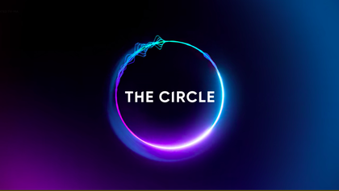

The Circle is a reality TV show where contestants are made to live separately in their own apartments with only one form of communication, which is a social media app called The Circle. In The Circle, contestants create a profile, start group chats, and play games. Eventually, players are made to rate each other from favorite to least favorite. The top two players are designated as "influencers", and choose one player to be eliminated.
The Circle is a great show with a social media twist that creates an interesting dynamic between players. In this show, it is unknown whether you are actually talking to the people in the pictures or not, which can create interesting "Catfish Hunts". Although I've never figured out the benefit of finding out who the catfishes are, the drama that results from these hunts lead to great content that I will always be interested in binge watching.
 Back to Home